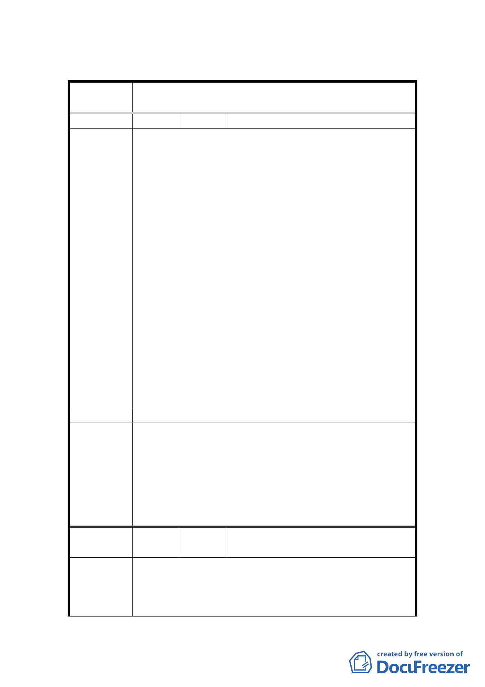

臺北市都市計畫委員會公民或團體所提意見綜理表
案
名
變更臺北市士林區三玉段一小段 22-3 地號等體育場用
地（天母運動公園）為臺北市立體育學用地主要計畫案
編 號 １ 陳情人 謝林玲玲
1.反對變更體育場用地，若變更為體育學院所有地，將
來居民的使用權將控制於學院手中。目前運動場建蔽
率為 15％，若改為大專用地，建蔽率為 40％，學院可
任意大興土木蓋新校舍，剝奪天母地區居民運動場
所，天母地區的綠地及運動場地將被削減。
2.本計畫範圍天母運動公園原徵收用途為公共設施用
地，依都市計畫法第 43 條：公共設施用地應就人口、
土地使用、交通等現狀及未來發展趨勢，決定其項目、
位置與面積，以增進市民活動之便利，及確保良好之
陳 情 理 由 都市生活環境。天母運動公園周邊地區人口及交通已
達飽和，體育學院進駐後，大量學生騎乘摩托車由忠
誠路 277 巷進出，不僅影響交通，與啟明及啟智學校
學生爭道，更是疏忽對弱勢團體之照顧。若變更為體
育學院用地，上述增進市民活動之便利之目的即面臨
消滅，有違當初徵收土地之原意。
3.地目尚未變更，都市計畫變更尚未通過，為何臺北市
立體育學院已偷渡完成整地，蓋好教學大樓，是臺北
市立體育學院不尊重都市計畫委員會，還是都市計畫
委員會形同虛設。
建 議 辦 法 反對變更體育場用地，請維持體育場用地。
本案為期能兼顧保障民眾使用現有體育場用地相關設施
之權益，以及臺北市立體育學院校地需求，縮小原公展
委員會決
議
計畫之變更範圍（167,958.65 平方公尺），並以申請單
位臺北市政府（臺北市立體育學院）本次提會之修正資
料（84,663 平方公尺）作為計畫變更範圍，其餘多用途
草坪、戶外劇場、青少年活動區、籃球場、棒球場等區
域則仍維持為體育場用地。
編
號2
陳情人
搶救天母運動公園自救委員會
黃世豐等 20,702 人
1.臺北市政府於民國 70 年徵收「天母運動公園」其目的
陳情理由
在於提供臺北市民運動休憩場所，且自公園竣工至
今，早已成為臺北市民及國外人士運動休憩中心。
2.此次公園地目變更之都市計畫說明會，市府選在市民
11